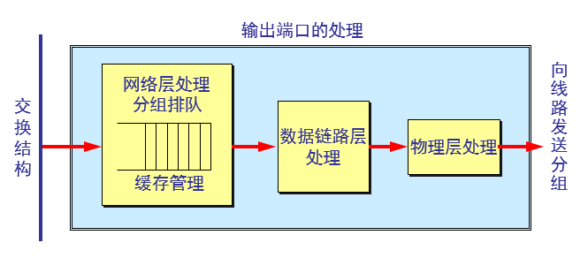
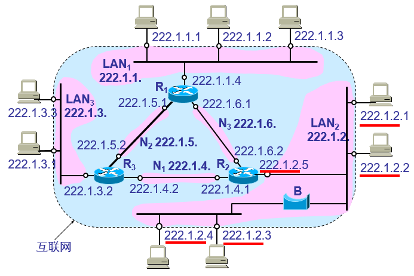
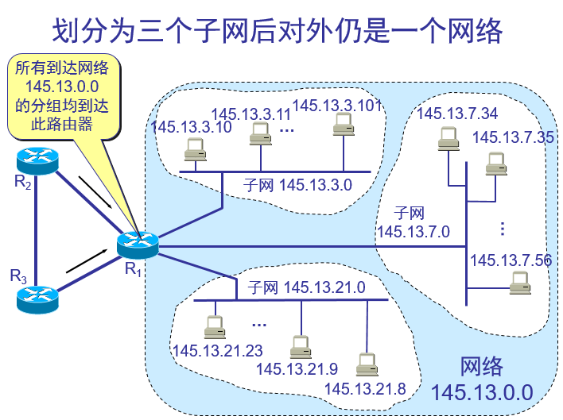

因特网采用的设计思路
网络层向上只提供简单灵活的、无连接的、尽最大努力交付的数据报服务。
网络在发送分组时不需要先建立连接。每一个分组（即 IP 数据报）独立发送，与其前后的分组无关（不进行编号）。
网络层不提供服务质量的承诺。即所传送的分组可能出错、丢失、重复和失序（不按序到达终点），当然也不保证分组传送的时限。
网际层的 IP 协议及配套协议
转发：是将分组从一个输入链路接口转移到适当的输出链路接口的路由器本地动作。转发一般发生的时间尺度很短，通常用硬件来实现。
路由选择：是指确定分组从源到目的地所采取的端到端路径的网络范围处理过程。发生时间尺度较长，通常用软件实现。当分组从发送方流向接收方时，网络层必须决定这些分组所采用的路由或路径。计算这些路径的算法被称为路由选择算法。
路由器结构图
输入端口：
输入端口1：执行终结入物理链路的物理层功能；
输入端口2：与位于入链路远端的数据链路层交互来执行数据链路层功能；
输入端口3：通过查询转发表决定路由器的输出端口，到达的分组通过路由器的交换结构转发到输出端口，控制分组从输入端口转发到路由选择处理器
交换结构：将路由器输入端口连接到他的输出端口。
输出端口：存储从交换结构接收到的分组。并通过执行必要的链路层和物理层功能在输出链路上传出这些分组。
路由选择处理器：传统路由器中，它执行路由选择协议，维护路由选择表与关联链路状态信息，并为该路由器计算转发表。在SDN路由器中，路由器选择处理器负责
与远程控制器通信，目的是接收远程控制器计算的转发表项，并在该路由器的输入端口安装这些表项，路由选择处理器还执行网络管理功能。
输入端口处理
数据链路层剥去帧首部和尾部后，将分组送到网络层的队列中排队等待处理。这会产生一定的时延。
交换结构
输出端口处理

当交换结构传送过来的分组先进行缓存。数据链路层处理模块将分组加上链路层的首部和尾部，交给物理层后发送到外部线路。
排队及分组丢弃
若路由器处理分组的速率赶不上分组进入队列的速率，则队列的存储空间最终必定减少到零，这就使后面再进入队列的分组由于没有存储空间而只能被丢弃。
路由器中的输入或输出队列产生溢出是造成分组丢失的重要原因。
IP 层转发分组的流程
IP 数据报的首部中没有地方可以用来指明“下一跳路由器的 IP 地址”。
当路由器收到待转发的数据报，不是将下一跳路由器的 IP 地址填入 IP 数据报，而是送交下层的网络接口软件。
网络接口软件使用 ARP 负责将下一跳路由器的 IP 地址转换成硬件地址，并将此硬件地址放在链路层的 MAC 帧的首部，然后根据这个硬件地址找到下一跳路由器。
分组转发算法
(1) 从数据报的首部提取目的主机的 IP 地址 D, 得出目的网络地址为 N。
(2) 若网络 N 与此路由器直接相连，则把数据报直接交付目的主机 D；否则是间接交付，执行(3)。
(3) 若路由表中有目的地址为 D 的特定主机路由，则把数据报传送给路由表中所指明的下一跳路由器；否则，执行(4)。
(4) 若路由表中有到达网络 N 的路由，则把数据报传送给路由表指明的下一跳路由器；否则，执行(5)。
(5) 若路由表中有一个默认路由，则把数据报传送给路由表中所指明的默认路由器；否则，执行(6)。
(6) 报告转发分组出错。
IPv4数据报格式
一个 IP 数据报由首部和数据两部分组成。首部的前一部分是固定长度，共 20 字节，是所有 IP 数据报必须具有的。在首部的固定部分的后面是一些可选字段，其长度是可变的。
版本:占 4 位，指 IP 协议的版本目前的 IP 协议版本号为 4 (即 IPv4)
首部长度:占 4 位，可表示的最大数值是 15 个单位(一个单位为 4 字节)因此 IP 的首部长度的最大值是 60 字节。
区分服务:占 8 位，用来获得更好的服务在旧标准中叫做服务类型，但实际上一直未被使用过。1998 年这个字段改名为区分服务。只有在使用区分服务（DiffServ）时，这个字段才起作用。在一般的情况下都不使用这个字段
总长度:占 16 位，指首部和数据之和的长度，单位为字节，因此数据报的最大长度为 65535 字节。总长度必须不超过最大传送单元 MTU。
标识(identification):占 16 位，它是一个计数器，用来产生数据报的标识。
标志(flag):占 3 位，目前只有前两位有意义。标志字段的最低位是 MF (More Fragment)。MF = 1 表示后面“还有分片”。MF = 0 表示最后一个分片。标志字段中间的一位是 DF (Don't Fragment) 。只有当 DF = 0 时才允许分片。
片偏移(13 位)指出:较长的分组在分片后某片在原分组中的相对位置。片偏移以 8 个字节为偏移单位。
生存时间(8 位):记为 TTL (Time To Live)数据报在网络中可通过的路由器数的最大值。
协议(8 位):字段指出此数据报携带的数据使用何种协议以便目的主机的 IP 层将数据部分上交给哪个处理过程(类似端口的作用)
首部检验和(16 位)字段只检验数据报的首部不检验数据部分。这里不采用 CRC 检验码而采用简单的计算方法。
源地址和目的地址都各占 4 字节
选项：增加首部的可变部分是为了增加 IP 数据报的功能，但这同时也使得 IP 数据报的首部长度成为可变的。这就增加了每一个路由器处理数据报的开销。实际上这些选项很少被使用。
IPv4数据报分片
互联多条链路的路由器，其每条链路运行具有不同MTU的链路层协议，当从某条链路层收到的IP数据报，通过检查转发表确定出链路，如果该出链路的MTU比该IP数据报较大，需要将IP数据报中的
数据分片成多个较小的IP数据报，用单独的链路层帧分装这些较小的IP数据报，然后通过输出链路发送这些帧，每个较小的数据报都称为一个片，在片到达目的地运输层以前需要重新组装。
IPv4编码
我们把整个因特网看成为一个单一的、抽象的网络。IP 地址就是给每个连接在因特网上的主机（或路由器）分配一个在全世界范围是唯一的 32 位的标识符。
IP 地址现在由因特网名字与号码指派公司ICANN (Internet Corporation for Assigned Names and Numbers)进行分配
分类 IP 地址
每一类地址都由两个固定长度的字段组成，其中一个字段是网络号 net-id，它标志主机（或路由器）所连接到的网络，而另一个字段则是主机号 host-id，它标志该主机（或路由器）。
两级的 IP 地址可以记为：IP 地址 ::= { <网络号>, <主机号>}
常用的三种类别的 IP 地址
IP 地址特点
(1) IP 地址是一种分等级的地址结构。分两个等级的好处是：
第一，IP 地址管理机构在分配 IP 地址时只分配网络号，而剩下的主机号则由得到该网络号的单位自行分配。这样就方便了 IP 地址的管理。
第二，路由器仅根据目的主机所连接的网络号来转发分组（而不考虑目的主机号），这样就可以使路由表中的项目数大幅度减少，从而减小了路由表所占的存储空间。
(2) 实际上 IP 地址是标志一个主机（或路由器）和一条链路的接口。
当一个主机同时连接到两个网络上时，该主机就必须同时具有两个相应的 IP 地址，其网络号 net-id 必须是不同的。这种主机称为多归属主机(multihomed host)。
由于一个路由器至少应当连接到两个网络（这样它才能将 IP 数据报从一个网络转发到另一个网络），因此一个路由器至少应当有两个不同的 IP 地址。
(3) 用转发器或网桥连接起来的若干个局域网仍为一个网络，因此这些局域网都具有同样的网络号 net-id。
(4) 所有分配到网络号 net-id 的网络，范围很小的局域网，还是可能覆盖很大地理范围的广域网，都是平等的。
互联网中的 IP 地址
在同一个局域网上的主机或路由器的IP 地址中的网络号必须是一样的。图中的网络号就是 IP 地址中的 net-id
路由器总是具有两个或两个以上的 IP 地址。路由器的每一个接口都有一个不同网络号的 IP 地址。
两个路由器直接相连的接口处，可指明也可不指明 IP 地址。如指明 IP 地址，则这一段连线就构成了一种只包含一段线路的特殊“网络” 。现在常不指明 IP 地址。

IP 地址与硬件地址
数据的流动：
在 IP 层抽象的互联网上只能看到 IP 数据报图中的 IP1→IP2 表示从源地址 IP1 到目的地址 IP2 两个路由器的 IP 地址并不出现在 IP 数据报的首部中
路由器只根据目的站的 IP 地址的网络号进行路由选择
在具体的物理网络的链路层只能看见 MAC 帧而看不见 IP 数据报
IP层抽象的互联网屏蔽了下层很复杂的细节在抽象的网络层上讨论问题，就能够使用统一的、抽象的 IP 地址研究主机和主机或主机和路由器之间的通信
地址解析协议 ARP
不管网络层使用的是什么协议，在实际网络的链路上传送数据帧时，最终还是必须使用硬件地址。
每一个主机都设有一个 ARP 高速缓存(ARP cache)，里面有所在的局域网上的各主机和路由器的 IP 地址到硬件地址的映射表。
当主机 A 欲向本局域网上的某个主机 B 发送 IP 数据报时，就先在其 ARP 高速缓存中查看有无主机 B 的 IP 地址。如有，就可查出其对应的硬件地址，再将此硬件地址写入 MAC 帧，然后通过局域网将该 MAC 帧发往此硬件地址。
ARP 高速缓存的作用
为了减少网络上的通信量，主机 A 在发送其 ARP 请求分组时，就将自己的 IP 地址到硬件地址的映射写入 ARP 请求分组。
当主机 B 收到 A 的 ARP 请求分组时，就将主机 A 的这一地址映射写入主机 B 自己的 ARP 高速缓存中。这对主机 B 以后向 A 发送数据报时就更方便了。
ARP 是解决同一个局域网上的主机或路由器的 IP 地址和硬件地址的映射问题。
如果所要找的主机和源主机不在同一个局域网上，那么就要通过 ARP 找到一个位于本局域网上的某个路由器的硬件地址，然后把分组发送给这个路由器，让这个路由器把分组转发给下一个网络。剩下的工作就由下一个网络来做。
从IP地址到硬件地址的解析是自动进行的，主机的用户对这种地址解析过程是不知道的。
只要主机或路由器要和本网络上的另一个已知 IP 地址的主机或路由器进行通信，ARP 协议就会自动地将该 IP 地址解析为链路层所需要的硬件地址。
ARP 的四种典型情况
发送方是主机，要把IP数据报发送到本网络上的另一个主机。这时用 ARP 找到目的主机的硬件地址。
发送方是主机，要把 IP 数据报发送到另一个网络上的一个主机。这时用 ARP 找到本网络上的一个路由器的硬件地址。剩下的工作由这个路由器来完成。
发送方是路由器，要把 IP 数据报转发到本网络上的一个主机。这时用 ARP 找到目的主机的硬件地址。
发送方是路由器，要把 IP 数据报转发到另一个网络上的一个主机。这时用 ARP 找到本网络上另一个路由器的硬件地址。剩下的工作由这个路由器来完成。
划分子网和构造超网
从两级 IP 地址到三级 IP 地址,在 ARPANET 的早期，IP 地址的设计确实不够合理,IP 地址空间的利用率有时很低,给每一个物理网络分配一个网络号会使路由表变得太大因而使网络性能变坏,
两级的 IP 地址不够灵活。
从 1985 年起在 IP 地址中又增加了一个“子网号字段”，使两级的 IP 地址变成为三级的 IP 地址。这种做法叫作划分子网(subnetting) 。划分子网已成为因特网的正式标准协议。
划分子网的基本思路
划分子网纯属一个单位内部的事情。单位对外仍然表现为没有划分子网的网络。
从主机号借用若干个位作为子网号 subnet-id，而主机号 host-id 也就相应减少了若干个位。
IP地址 ::= {<网络号>, <子网号>, <主机号>}
凡是从其他网络发送给本单位某个主机的 IP 数据报，仍然是根据 IP 数据报的目的网络号 net-id，先找到连接在本单位网络上的路由器。
然后此路由器在收到 IP 数据报后，再按目的网络号 net-id 和子网号 subnet-id 找到目的子网。
最后就将 IP 数据报直接交付目的主机。

当没有划分子网时，IP 地址是两级结构。
划分子网后 IP 地址就变成了三级结构。
划分子网只是把 IP 地址的主机号 host-id 这部分进行再划分，而不改变 IP 地址原来的网络号 net-id。
子网掩码
使用子网掩码(subnet mask)可以找出 IP 地址中的子网部分。
子网掩码是一个网络或一个子网的重要属性。
路由器在和相邻路由器交换路由信息时，必须把自己所在网络（或子网）的子网掩码告诉相邻路由器。
路由器的路由表中的每一个项目，除了要给出目的网络地址外，还必须同时给出该网络的子网掩码。
若一个路由器连接在两个子网上就拥有两个网络地址和两个子网掩码。
无分类编址 CIDR
CIDR 消除了传统的 A 类、B 类和 C 类地址以及划分子网的概念，因而可以更加有效地分配 IPv4 的地址空间
CIDR使用各种长度的“网络前缀”(network-prefix)来代替分类地址中的网络号和子网号。
无分类的两级编址
无分类的两级编址的记法是：IP地址 ::= {<网络前缀>, <主机号>}
CIDR 还使用“斜线记法”(slash notation)，它又称为CIDR记法，即在 IP 地址面加上一个斜线“/”，然后写上网络前缀所占的位数（这个数值对应于三级编址中子网掩码中 1 的个数）。
CIDR 把网络前缀都相同的连续的 IP 地址组成“CIDR 地址块”。
CIDR 地址块
128.14.32.0/20 表示的地址块共有 212 个地址（因为斜线后面的 20 是网络前缀的位数，所以这个地址的主机号是 12 位）。
这个地址块的起始地址是 128.14.32.0。
在不需要指出地址块的起始地址时，也可将这样的地址块简称为“/20 地址块”。
128.14.32.0/20 地址块的最小地址：128.14.32.0
128.14.32.0/20 地址块的最大地址：128.14.47.255
全 0 和全 1 的主机号地址一般不使用。
最长前缀匹配
使用 CIDR 时，路由表中的每个项目由“网络前缀”和“下一跳地址”组成。在查找路由表时可能会得到不止一个匹配结果。
应当从匹配结果中选择具有最长网络前缀的路由：最长前缀匹配(longest-prefix matching)。
网络前缀越长，其地址块就越小，因而路由就越具体(more specific) 。
最长前缀匹配又称为最长匹配或最佳匹配。
本地地址——仅在机构内部使用的 IP 地址，可以由本机构自行分配，而不需要向因特网的管理机构申请。
全球地址——全球唯一的IP地址，必须向因特网的管理机构申请。
网络地址转换的过程
内部主机 X 用本地地址 IP[X] 和因特网上主机 Y 通信所发送的数据报必须经过 NAT 路由器。
NAT 路由器将数据报的源地址 IP[X] 转换成全球地址 IP[G]，但目的地址 IP[Y] 保持不变，然后发送到因特网。
NAT 路由器收到主机 Y 发回的数据报时，知道数据报中的源地址是 IP[Y] 而目的地址是 IP[G]。
根据 NAT 转换表，NAT 路由器将目的地址 IP[G] 转换为 IP[X]，转发给最终的内部主机 X。
NAT原理